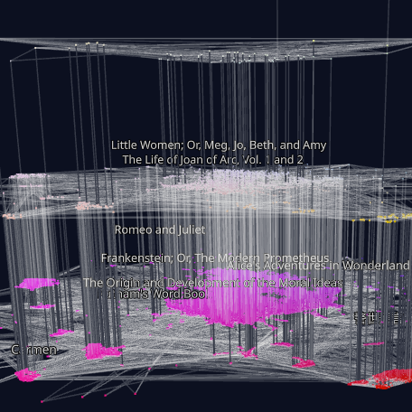
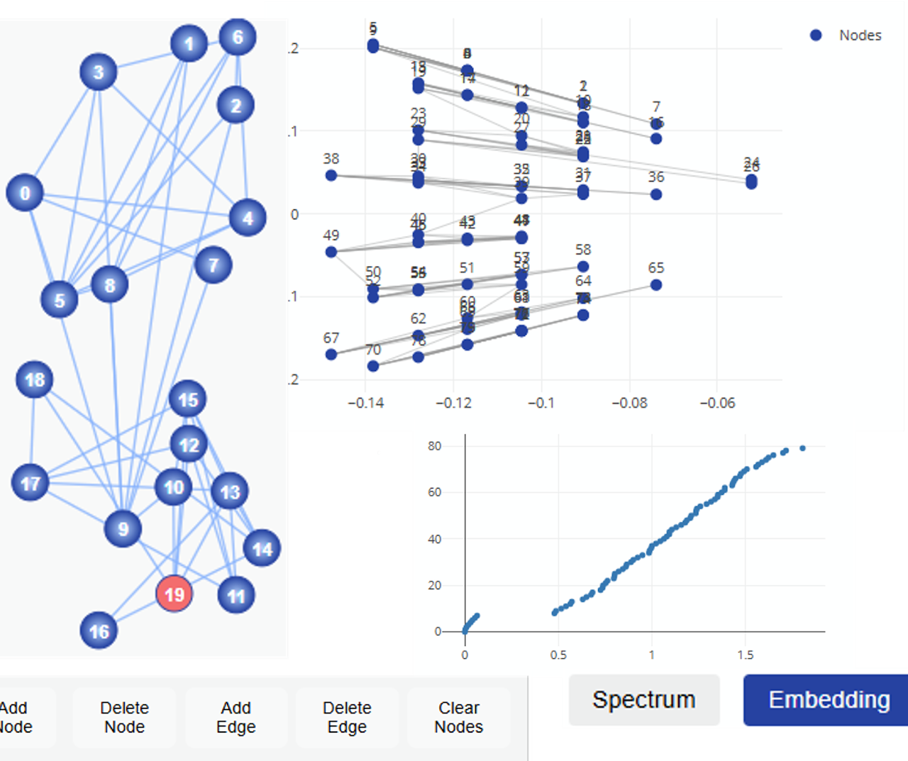
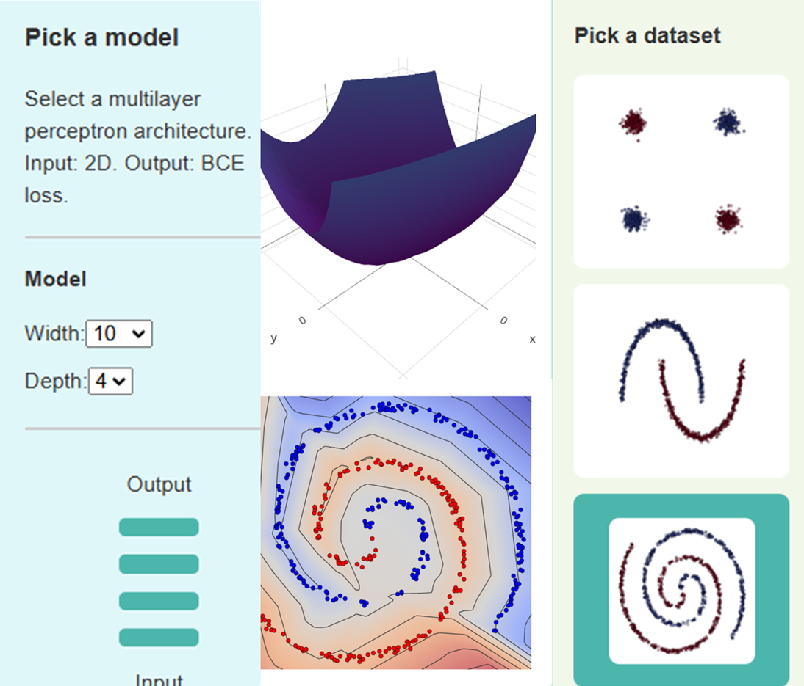

Hierarchical navigable small world
Jacob Wood
Stony Brook University · Computer Science Department
These projects explore the use of visualization tools to interpret and explain machine learning models and their associated concepts. The goal is to deepen intuition and transparency into complex and black box topics in cutting edge machine learning techniques.
Built by Stony Brook students
Tools I've built myself

